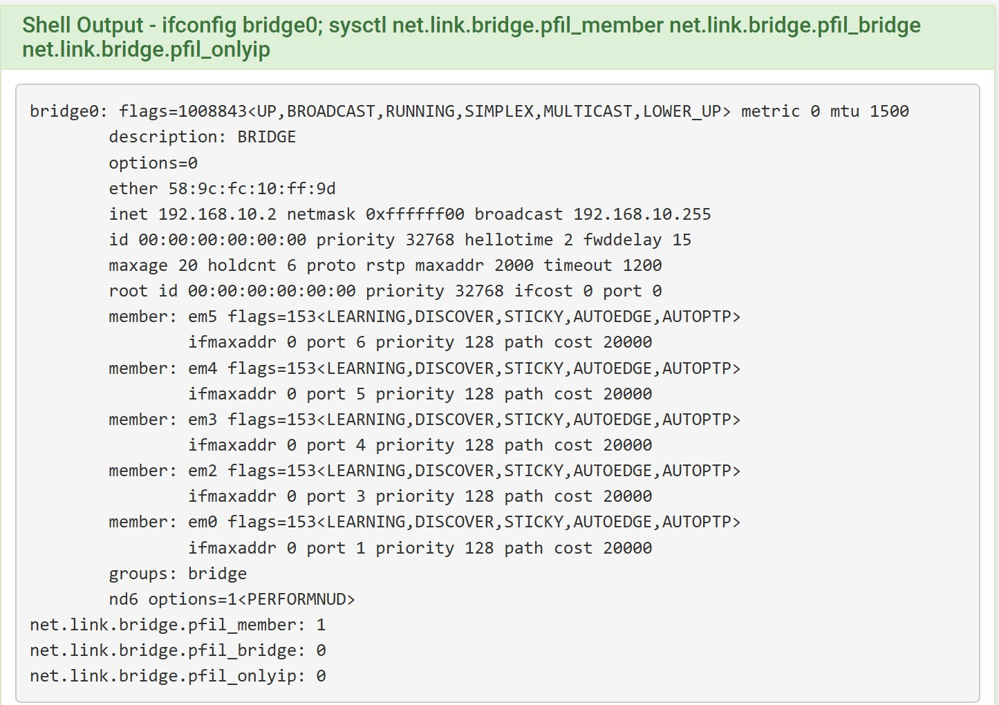
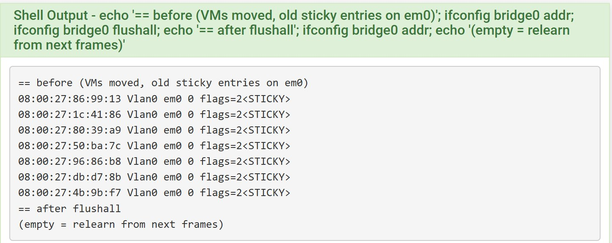
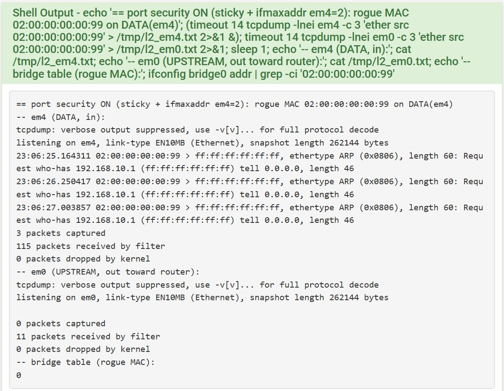

서버 설정을 그대로 두는 pfSense 투명 방화벽 전환
이틀 전 pfSense를 NAT 라우터(경계형)로 넣었을 때는 서버 여섯 대의 경로·DNS와 sshd·Nginx·인증서·앱 허용 주소를 모두 고쳐야 했습니다. 이번에는 pfSense를 브리지(투명) 방화벽으로 하나 더 두고, 서버 쪽 네트워크 설정은 한 줄도 바꾸지 않은 채 구역을 DMZ·APP·DATA·OPS로 나눴습니다. 작업 중에 브리지 MAC 학습 때문에 통신이 끊긴 일과, 그 사이 앱 리더가 넘어간 기록도 함께 정리했습니다.
- 환경
- VM 실습망(작업 PC의 VirtualBox 7.2.8). pfSense CE 2.7.2(FreeBSD 14), 서버 여섯 대 192.168.10.0/24
- 구성
- 기존 라우터 pfsense-fw(192.168.10.1)는 게이트웨이로 유지, 그 아래에 브리지 방화벽 pfsense-tp
- 결과
- 서버 주소·경로·DNS 변경 없음, 구역 간 허용·차단 확인, L2 포트 보안으로 모르는 MAC 차단
- 관련 작업
- failstop
브리지 방화벽 구성
기존 라우터 VM을 VBoxManage clonevm으로 복제해 pfsense-tp를 만들고, 공장 초기화 뒤 관리 주소만 host-only 망의 192.168.56.20으로 잡았습니다. NIC 다섯 개를 bridge0에 묶었습니다. em0은 기존 라우터 쪽(UPSTREAM)이고 em2~em5가 각 구역입니다. 브리지에는 기록 전송과 패키지 갱신용으로 192.168.10.2만 붙였습니다.
필터는 브리지 인터페이스가 아니라 멤버 인터페이스에서 걸도록 pfil_member=1, pfil_bridge=0으로 두었습니다. 그래야 구역 인터페이스마다 규칙을 따로 쓸 수 있습니다. 바깥쪽 아웃바운드 NAT는 껐습니다.

ifconfig bridge0와 브리지 필터 sysctl. 멤버 다섯 개가 모두 STICKY로 학습합니다.NAT를 걷기 전에 진입 주소부터 서버 자기 주소로 바꿨습니다. 웹 진입 서버는 Nginx 바인딩, Host 헤더, 인증서 SAN에 192.168.10.11을 넣었고, 앱 서버는 CORS·WebSocket 허용 주소를 바꿨습니다. 그 뒤 기존 라우터의 포트 포워딩을 지우고, 작업 PC → 웹 진입 서버 443·80을 주소 변환 없이 허용했습니다.
서버를 구역으로 옮긴 직후 통신이 끊겼다
서버 안의 IP·경로·DNS는 그대로 두고, VirtualBox에서 각 서버의 두 번째 NIC만 구역 내부망으로 옮겼습니다.
## 2026-09-28 22:57:22 KST NIC2(enp0s8)를 구역 내부망으로. 서버 안 설정은 바꾸지 않는다
PS> VBoxManage controlvm EDGE01 nic2 intnet lab-dmz
PS> VBoxManage controlvm APP01 nic2 intnet lab-app
PS> VBoxManage controlvm APP02 nic2 intnet lab-app
PS> VBoxManage controlvm DB01 nic2 intnet lab-data
PS> VBoxManage controlvm DB02 nic2 intnet lab-data
PS> VBoxManage controlvm OPS01 nic2 intnet lab-ops
## 22:57:32 이동 직후
PS> curl.exe -k -s -o NUL -w "%{http_code} %{time_total}s" --max-time 6 https://192.168.10.11/
000 6.002078s (curl exit 28)
PS> Test-NetConnection 192.168.10.21 -Port 22 (앱 서버 1 SSH)
TcpTestSucceeded : False
## 22:58:41 pfsense-tp에서 ifconfig bridge0 flushall 뒤
PS> curl.exe -k -s -o NUL -w "%{http_code} %{time_total}s" --max-time 6 https://192.168.10.11/
200 0.007720s (curl exit 0)
PS> Test-NetConnection 192.168.10.21 -Port 22 (앱 서버 1 SSH)
TcpTestSucceeded : True원인은 브리지의 MAC 표였습니다. 옮기기 전에는 서버 MAC 일곱 개가 모두 em0(UPSTREAM)에서 들어왔기 때문에 em0에 STICKY로 고정 학습되어 있었습니다. STICKY 항목은 시간이 지나도 사라지지 않아서, 서버가 다른 포트로 옮겨 간 뒤에도 브리지는 계속 em0 쪽으로 프레임을 보냈습니다. flushall로 표를 비우자 다음 프레임부터 em2~em5에 다시 학습했습니다. 이후로는 구역을 옮긴 뒤 flushall을 작업 순서에 넣었습니다.

flushall 뒤 비워졌습니다.끊긴 약 70초 동안 앱 서버에서 DB로 가는 연결도 막혔습니다. 리더였던 APP01은 리스 갱신에 실패해 리더십을 내려놓았고, DB에 다시 닿은 APP02가 리더로 승격했습니다. 리더십을 잃은 노드는 스스로 재승격하지 않도록 설계해 두었기 때문에 APP01은 재기동해서 대기 노드로 되돌렸습니다.
$ ssh app01 "sudo journalctl -u exchange-app --since '22:57:00' --until '22:59:30' | grep -E 'leader-lease|HaAvailability|…'"
Sep 28 22:57:32 app01.lab … LeaderLeaseService : 리스 틱 실패: Failed to obtain JDBC Connection
…
Sep 28 22:58:26 app01.lab … LeaderLeaseService : 리더십 상실(재승격 금지, 복귀는 재기동): holder=c60fc22b
Sep 28 22:58:26 app01.lab … HaAvailability : readiness 전이: REFUSING_TRAFFIC
$ ssh app02 "sudo journalctl -u exchange-app … "
Sep 28 22:58:31 app02.lab … LeaderLeaseService : 리더 승격: holder=d8f94a83-…, epoch=15
Sep 28 22:58:31 app02.lab … HaAvailability : readiness 전이: ACCEPTING_TRAFFICL2 포트 보안: static 대신 sticky와 포트당 한도
구역 포트에 모르는 장비가 붙는 경우를 막으려고 처음에는 MAC을 static으로 등록하고 포트당 MAC 수(ifmaxaddr)를 제한했습니다. 이 버전의 ifconfig는 static 항목을 VLAN 1로 넣는데, 태그 없는 실제 프레임은 VLAN 0으로 찾기 때문에 항목이 맞지 않았습니다. 포트당 한도는 이미 static 항목으로 차 있어 새 학습도 거절됐고, 약 50초 동안 통신이 끊겼습니다. 이때도 앱 리더가 한 번 더 넘어갔습니다. flushall로 복구한 뒤 static은 쓰지 않고 STICKY 학습과 ifmaxaddr(em0 1 · em2 1 · em3 2 · em4 2 · em5 1)만으로 포트 보안을 걸었습니다.
확인은 DB02에 IP 없는 macvlan(02:00:00:00:00:99)을 만들어 ARP 요청을 보내는 방식으로 했습니다. 보안을 걸기 전에는 이 프레임이 em0으로 3개 나가고 브리지 표에도 학습됐습니다. 보안을 건 뒤에는 em4(DATA)로 3개가 들어왔지만 em0으로는 0개가 나갔고, 브리지 표에도 없습니다.

구역 간 규칙과 경로 확인
규칙은 웹 → 앱 8080, 앱 → DB 5432, 관제 → 각 구역 수집 포트만 열고 그 밖은 차단(기록)으로 두었습니다. 작업 PC에서 각 서버로 SSH를 넣어 nc로 확인했습니다. 웹 진입 서버에서 앱의 다른 포트(8081)는 L4에서, DB는 L3에서 막힙니다.
# 2026-09-29 01:04:38 KST 작업 PC
PS> function probe { param($from, $to, $port) ssh $from "nc -zv -w 3 $to $port 2>&1 | grep -oE 'Connected|TIMEOUT'" }
PS> probe edge01 192.168.10.21 8080 # 웹 → 앱 8080
Connected
PS> probe edge01 192.168.10.21 8081 # 웹 → 앱 8081 (L4)
TIMEOUT
PS> probe edge01 192.168.10.31 5432 # 웹 → DB (L3)
TIMEOUT
PS> probe app01 192.168.10.31 5432 # 앱 → DB 5432
ConnectedNAT를 지운 뒤 예전 진입 주소는 응답하지 않고, 서버 주소로 바로 접속됩니다. 경로 추적에는 기존 라우터와 서버만 나오고 투명 방화벽은 보이지 않습니다. 서버 여섯 대의 주소·MAC·기본 경로·DNS는 작업 전후에 같은 명령으로 떠서 비교했고 차이가 없었습니다.
# 2026-09-28 23:22:00 KST 작업 PC
PS> curl.exe -k -s -o NUL -w "%{http_code}`n" --max-time 5 https://192.168.56.10/ # 예전 NAT 진입 주소
000
PS> curl.exe -k -s -o NUL -w "%{http_code}`n" --max-time 5 https://192.168.10.11/ # 서버 자기 주소
200
PS> tracert -d -h 4 -w 1000 192.168.10.11
1 <1 ms <1 ms <1 ms 192.168.56.10
2 <1 ms <1 ms <1 ms 192.168.10.11
PS> ssh edge01 "ip -4 -br addr show enp0s8"
enp0s8 UP 192.168.10.11/24그 위에 L7 입구(192.168.10.10, HAProxy가 웹 진입 서버 인증서로 TLS를 풀고 다시 암호화)와 Suricata를 붙였고, 두 방화벽의 기록은 관제 서버(OPS01)로 모아 14일 보관하도록 했습니다. 입구를 거치지 않고 서버 주소로 바로 가는 443은 UPSTREAM 규칙으로 막았습니다.
남은 문제
투명 방화벽 한 대가 단일 장애 지점입니다. 구역 이동(약 70초), static 시도(약 50초), 재부팅(종료 명령부터 웹 200까지 약 82초) 세 번 모두 앱 → DB가 끊겨 매칭 리더가 넘어갔습니다. 재부팅 뒤 규칙·포트 보안·학습 MAC은 유지됐지만, 운영 환경이라면 유지보수 시간을 따로 잡거나 두 대 구성을 설계해야 합니다. Suricata는 IDS(탐지만)로 켰고, 차단 모드와 오탐 조정은 하지 않았습니다. 웹 진입 서버 → 앱 8080 구간은 원래 HTTP라 내부 선로에 평문이 남습니다.